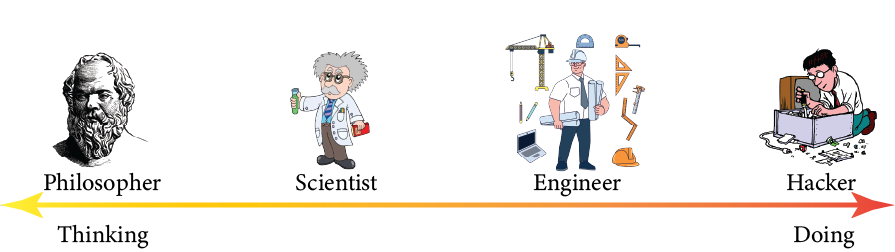
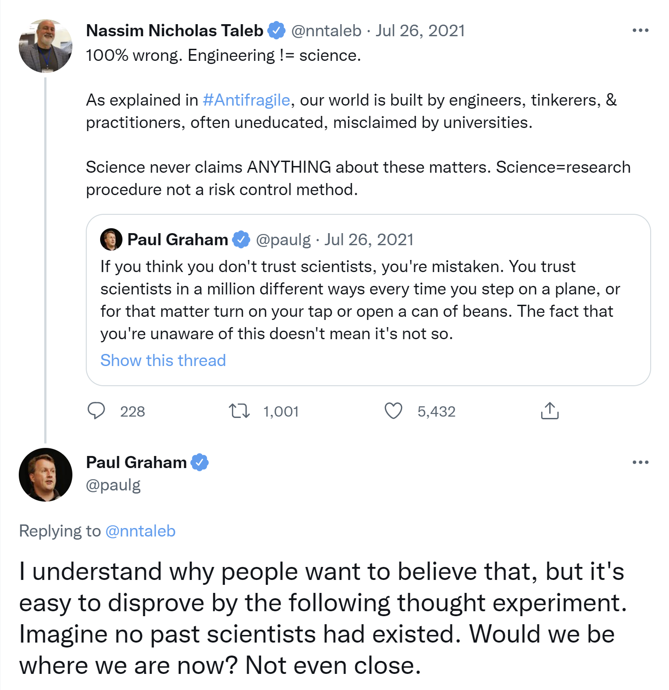

As I uncover the underlying meaning of this title, I hope I will be able to communicate a philosophical framework that I am still developing.
The key idea of this framework is to establish four modes of operating between the two extremes of thinking and doing.
These four modes are Philosophy, Science, Engineering, and Hacking. The thinking extreme is Philosophy and the doing extreme is Hacking.
Let us say you want to do something (like making pasta or doing research), either you can think about different aspects of it, you can also think about the thinking process itself, or on the other hand, you can directly jump to doing it without thinking at all.
Now, almost every time, we do not do either but rather something in between. I have personally felt the tussle between thinking and doing all the time, especially during my Ph.D.
In my blog posts, I will be talking about both -- the things I do as well as the things I think of.
In fact, I am currently writing some of the blogs to think properly (yes, you can expect conceptual drifts).
The four categories
The following diagram conveys the idea of four categories.  We humans are great at doing things which makes all of us natural hackers. So what is the downside? I think the answer is efficiency. The thing which we are doing was probably done in different ways by different people (including us), therefore it is probably a better idea to apply some thinking before we do the thing. The extent of thinking (philosophizing, scientizing) is probably what differentiates us from other animals sometimes.
Temporal aspect
The state of being either of these four is not permanent obviously. We keep hopping from one state to the other over time.
In fact, I think our multiple personalities are in these different states all the time bringing some kind of an internal mental tussle.
Therefore, we have some interference going on with these components spatially and temporally.
The temporal aspect is particularly interesting to me because we solve things and accomplish tasks over time and not in an instant.
There is another interesting angle to the time aspect, what comes first? Given a task which personality dominates first?
Clearly, the answer depends upon the type of task.
I also think that this kind of question put too much emphasis on the "first" producing an extreme illusion that only the first is responsible and no one else.
There are several instances where "first" barely had any contribution to the solution for a given problem.
Anyway, to spice things up, here is a Twitter screenshot to illustrate people paying too much attention to the "first".

Wait! What has it got to do with your blog title Pheta Cheese?
The greek letter Φ (phi) forms the first half and the greek letter H (Eta) forms the second half. Since I will be talking about different aspects of life within these two extremes, I decided to use the word pheta. What about the word cheese? Well, all that I said so far in this article sounds serious, obscure, and rigid. So by choosing the word cheese (like say cheese for smile), I am hoping to keep things light-hearted with a pinch of humor and absurdity. Now that you might be thinking it hasn't got to do anything with the actual feta cheese, I must confess that my love for feta cheese definitely influenced the title of this blog.
Image Credits
1. Grunge wall photo created by benzoix - www.freepik.com
2. The black cat analogy by The Oatmeal Tweet